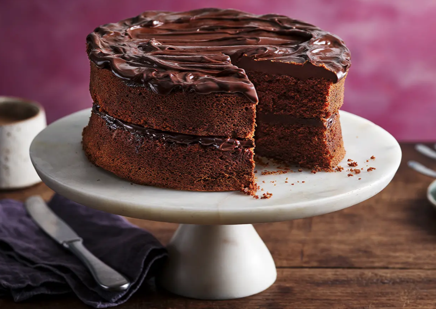

Home
Chocolate Fudge Cake

Chocolate Fudge Cake
Chocolate fudge cake is the ultimate dessert for anyone who loves rich, indulgent flavors. With its moist layers and glossy chocolate frosting, it’s a cake that feels decadent yet comforting—perfect for birthdays, celebrations, or simply when you need a chocolate fix.
What sets this cake apart is its fudgy texture. Unlike lighter sponges, it’s dense, moist, and full of deep cocoa flavor. Pair it with a scoop of vanilla ice cream or fresh berries, and you’ve got a dessert that’s guaranteed to impress.
Ingredients
For the Cake
- 1 ¾ cups all-purpose flour
- ¾ cup cocoa powder
- 2 cups sugar
- 2 tsp baking powder
- 1 tsp baking soda
- ½ tsp salt
- 1 cup milk
- ½ cup vegetable oil
- 2 large eggs
- 2 tsp vanilla extract
- 1 cup hot coffee (or hot water)
For the Fudge Frosting
- 200g (7 oz) dark chocolate, chopped
- 1 cup heavy cream
- ½ cup butter, softened
- 2 cups powdered sugar
Steps
- Make the cake batter: In a bowl, mix flour, cocoa, sugar, baking powder, baking soda, and salt. Add milk, oil, eggs, and vanilla, then stir until smooth. Slowly mix in the hot coffee (batter will be thin).
- Bake: Pour into two greased and lined cake tins. Bake at 350°F (175°C) for 30–35 minutes, or until a toothpick comes out clean. Cool completely.
- Make the frosting: Heat cream until just simmering, then pour over chopped chocolate. Stir until smooth, then whisk in butter and powdered sugar until fluffy.
- Assemble: Place one cake layer on a plate, spread frosting on top, then add the second layer. Cover the whole cake with the remaining frosting.
- Serve: Slice generously and enjoy with ice cream or fruit.